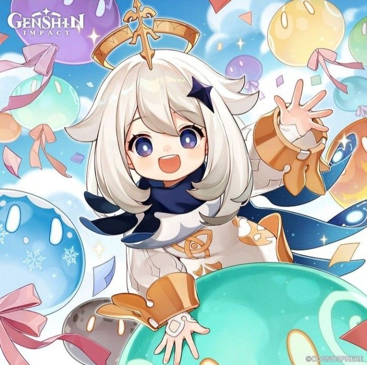
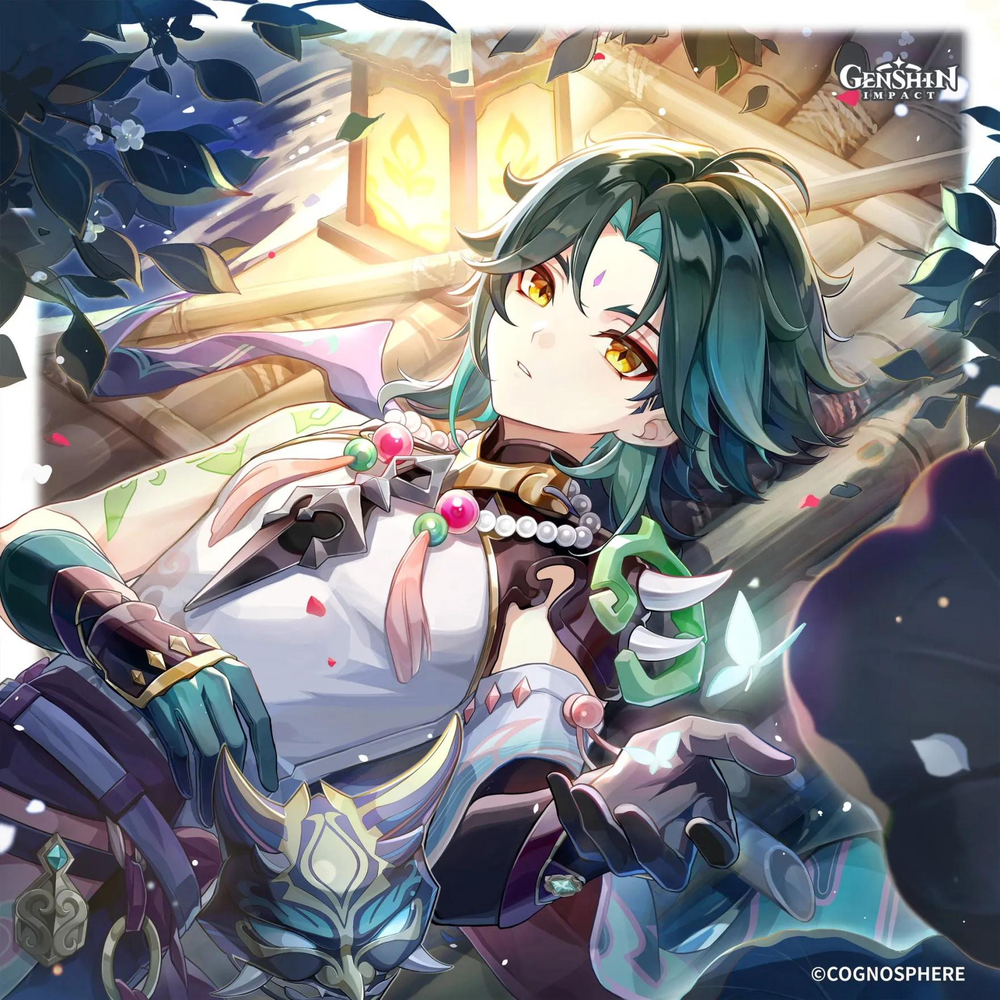
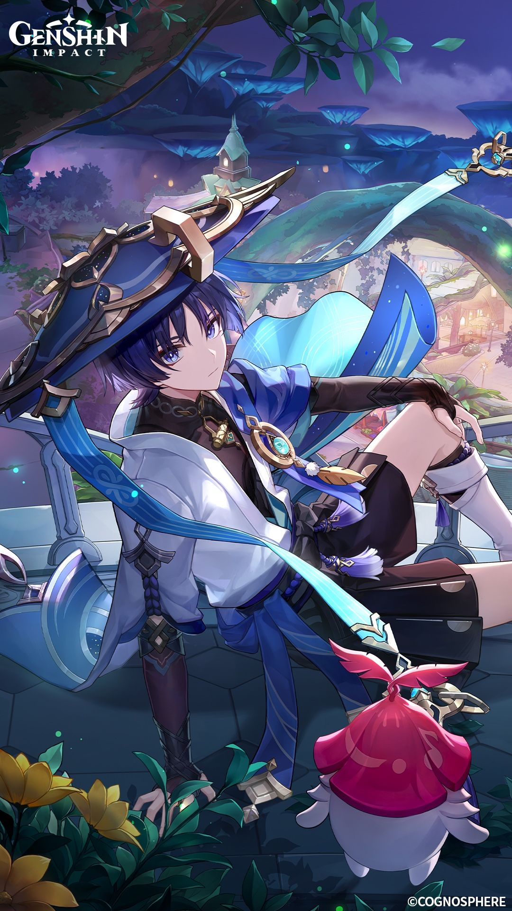
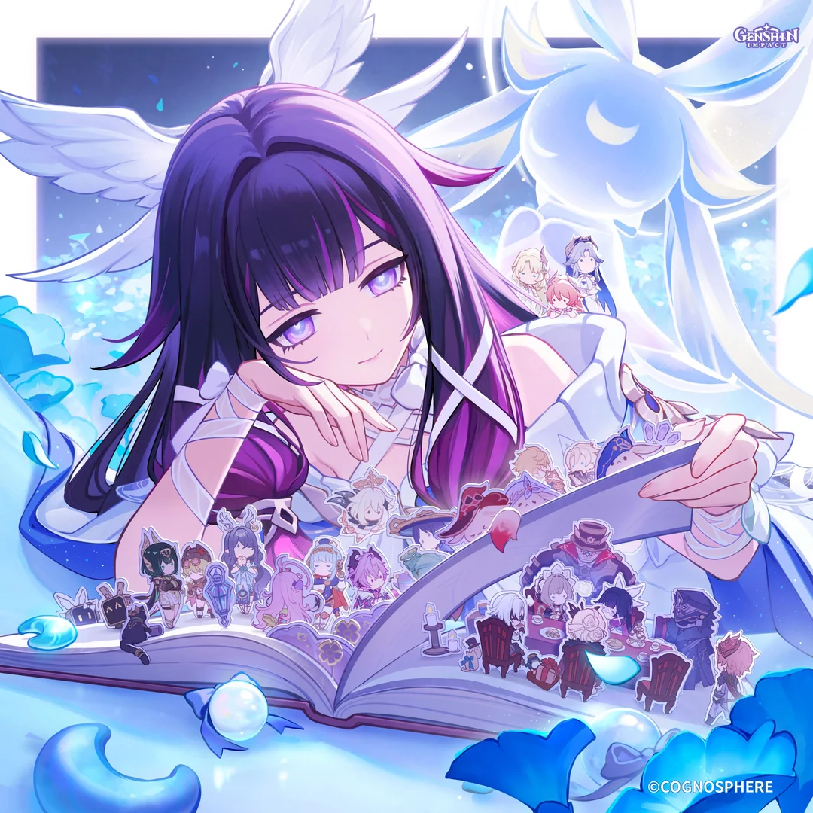
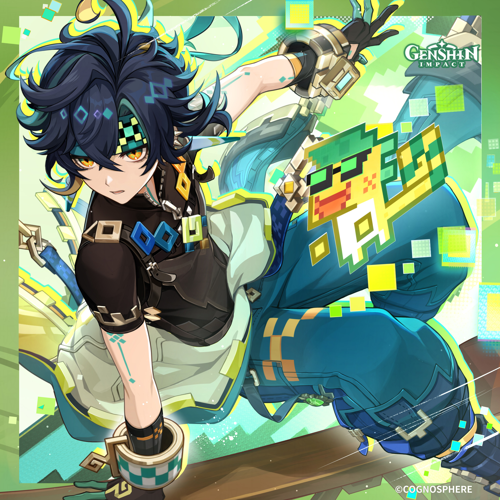
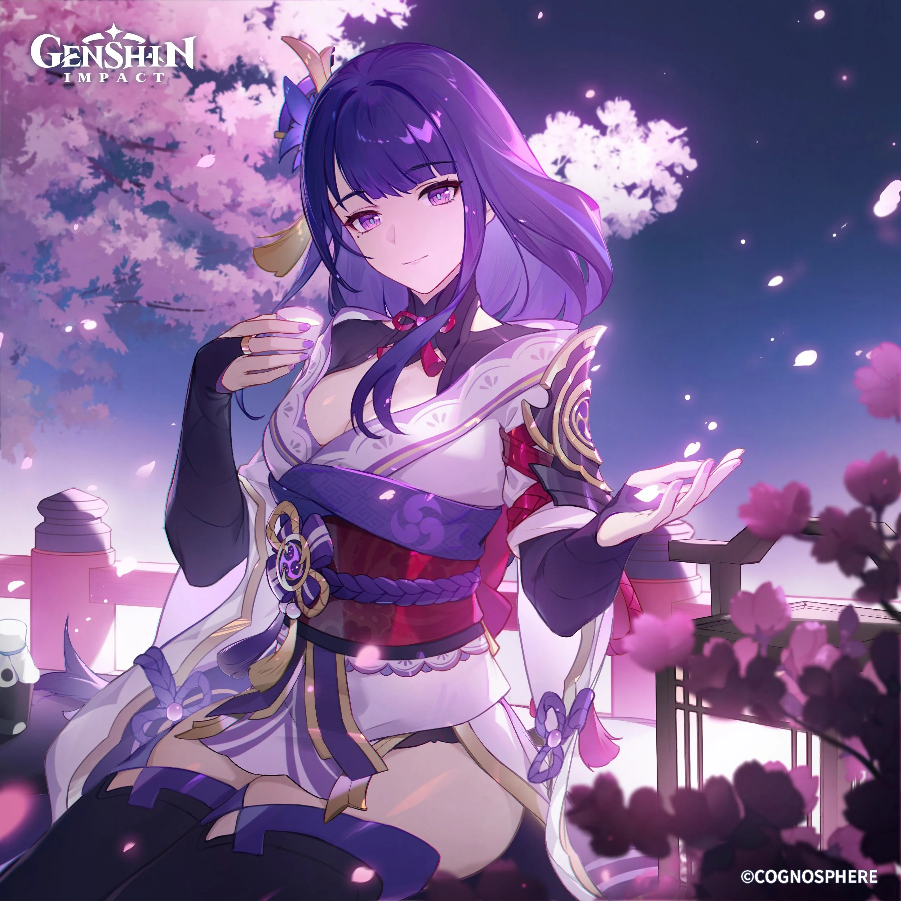
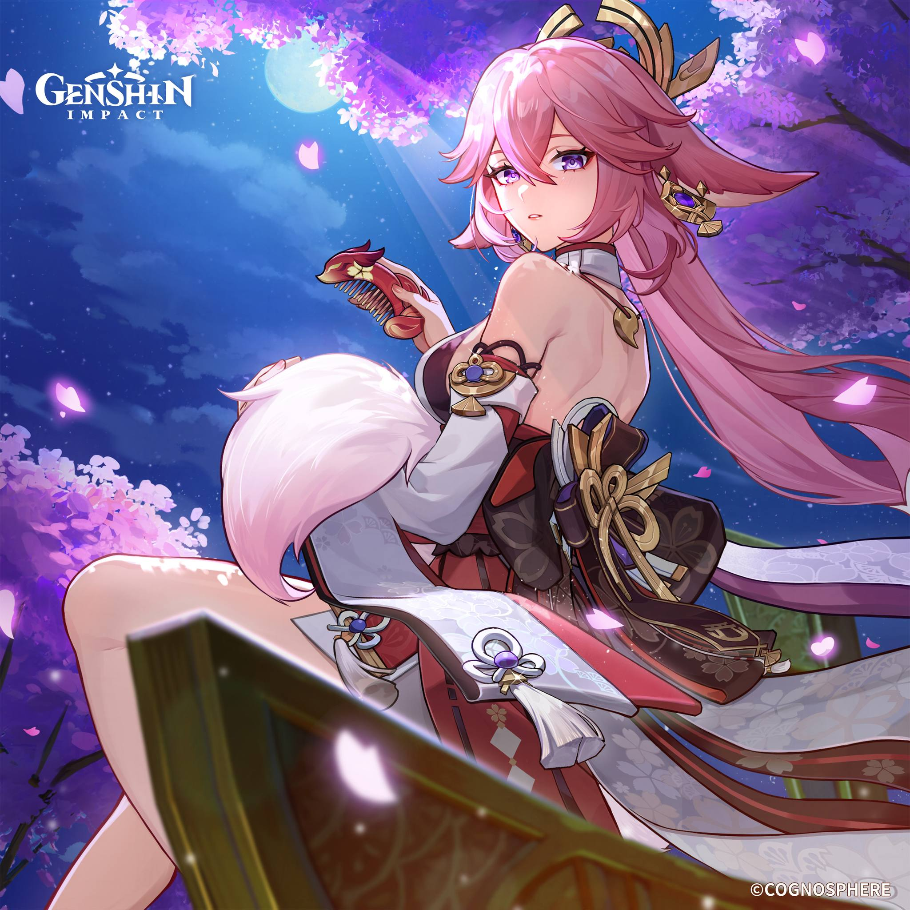
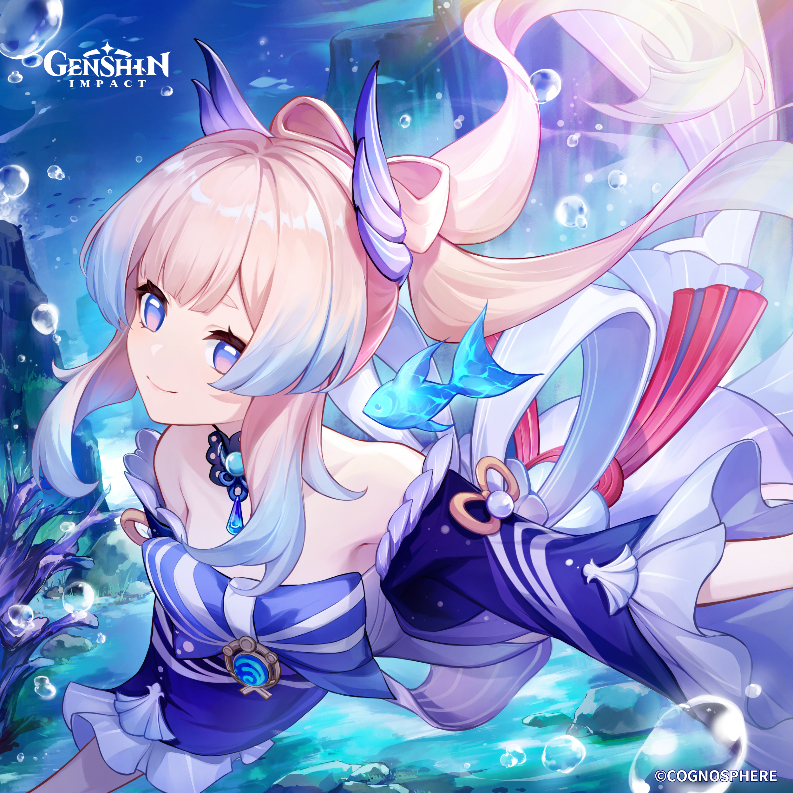

Paimon
A bem-humorada, comilona e tagarela companheira de viagem do Viajante.

A bem-humorada, comilona e tagarela companheira de viagem do Viajante.

Um Yaksha solitário e guardião de Liyue que carrega o peso de traumas passados.

Mensageiro dos Fatui que buscou a divindade e depois recomeçou como Andarilho.

A misteriosa mensageira dos Fatui, conhecida por sua fisionomia angelical.

Um caçador de recompensas pragmático e realista da tribo de Natlan.

A imponente Arconte Electro que governa Inazuma em busca da eternidade imutável.

A astuta e provocadora Alta Sacerdotisa do Santuário Narukami e editora de livros.

A estrategista brilhante e compassiva Sacerdotisa Divina da Ilha Watatsumi.